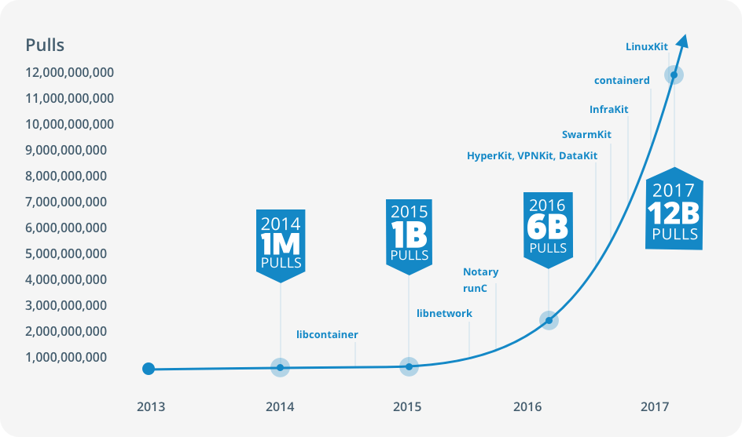

Container & Reproducibility
Docker vs. Singularity
Container & Reproducibility
impulse talk Retreat 2017
Sven Fillinger
What are containers?
DEFINITION
"Containers are a method of
operating system virtualization
that allow you to run an application and its dependencies in
resource-isolated processes
."
(AWS Amazon)
Container architecture
Container & Reproducibility
The FAIR concept
FAIR guidelines
Findable
Accessibility
Interoperability
Reusability
Wilkinson, M. D. et al., Nature (2016), doi: 10.1038/sdata.2016.18.
Docker
Docker pulls since 2013

Containers & HPC
Container in HPC environments
High flexibility to ship software and complete pipelines
Creators can develop pipelines within their used environment
Containers facilitate numerical stability during computation!
Numerical stability